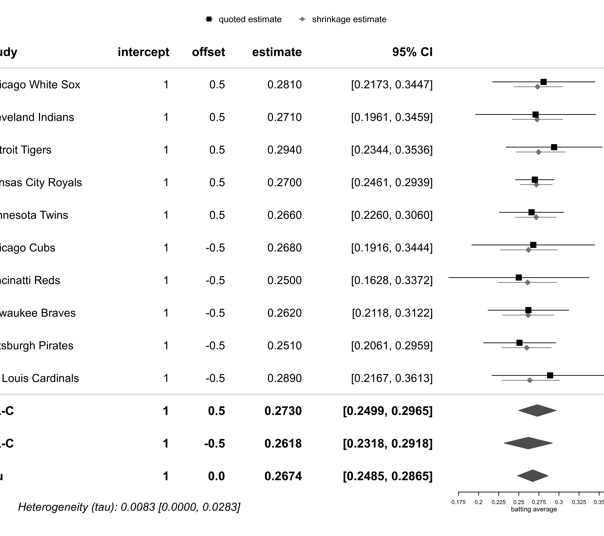
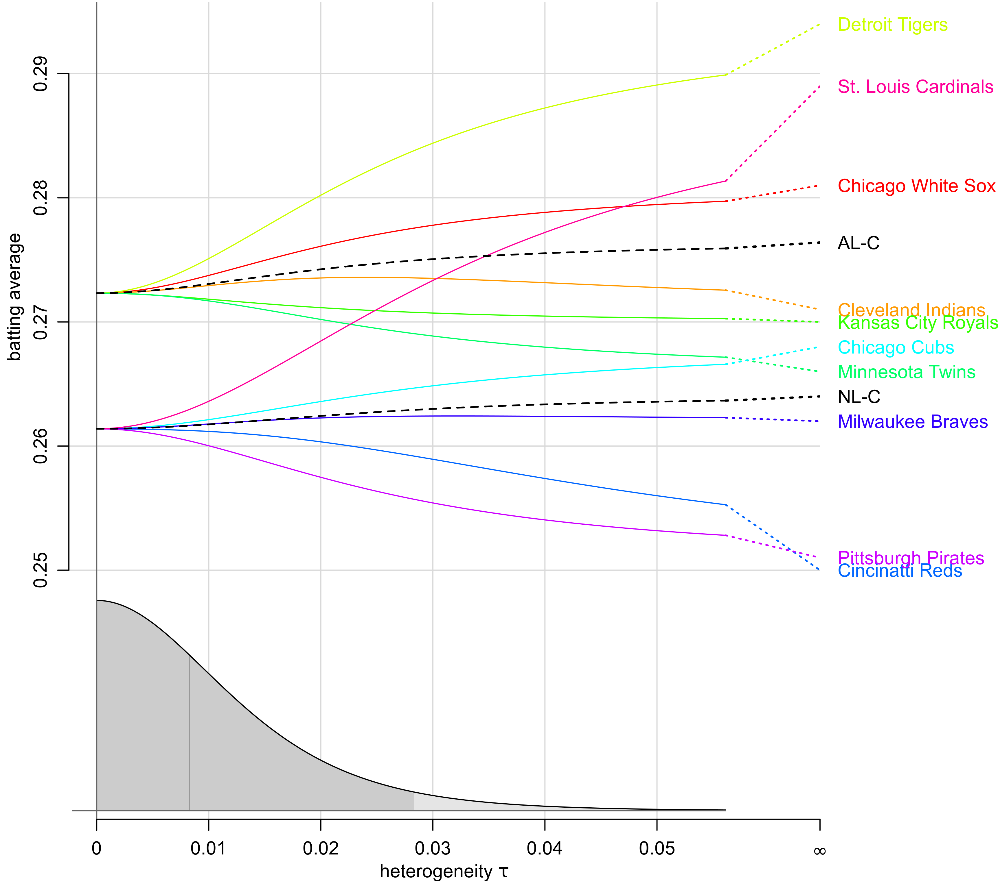

dat.meeker2017.RdBatting averages in 2014 for 10 baseball teams.
dat.meeker2017The data frame contains the following columns:
| team | character | baseball team |
| division | factor | division |
| mean | numeric | batting average (team sample mean) |
| se | numeric | team standard error |
| batters | integer | number of batters |
Meeker, Hahn, and Escobar (2017) considered an example application concerning batting averages from 10 baseball teams during 2014. The data (from chapter 17) consist of sample means (batting averages) and corresponding standard errors for each team's batters who had at least 300 at-bats. Baseball teams are associated with one of two divisions, namely American League Central (AL-C) or National League Central (NL-C).
Meeker, W. Q. , Hahn, G. J., & Escobar, L. A. (2017). Statistical intervals: A guide for practitioners and researchers (2nd ed.). Hoboken, NJ: John Wiley and Sons.
sports, raw means
dat.meeker2017
#> team division mean se batters
#> CHW Chicago White Sox AL-C 0.281 0.0325 5
#> CLE Cleveland Indians AL-C 0.271 0.0382 5
#> DET Detroit Tigers AL-C 0.294 0.0304 5
#> KC Kansas City Royals AL-C 0.270 0.0122 7
#> MIN Minnesota Twins AL-C 0.266 0.0204 4
#> CHC Chicago Cubs NL-C 0.268 0.0390 6
#> CIN Cincinatti Reds NL-C 0.250 0.0445 7
#> MIL Milwaukee Braves NL-C 0.262 0.0256 4
#> PIT Pittsburgh Pirates NL-C 0.251 0.0229 6
#> STL St. Louis Cardinals NL-C 0.289 0.0369 7
library(metafor)
library(bayesmeta)
# convert data to an "escalc" object
es <- escalc(measure="GEN",
yi=mean, sei=se, slab=team, ni=batters,
data=dat.meeker2017)
# illustrate the plain data
forestplot(es, zero=NA, title="baseball batting averages (dat.meeker2017)")
# specify regressor matrix,
# distinguishing between AL-C and NL-C divisions
Xmat <- cbind("intercept" = 1,
"offset" = rep(c(0.5, -0.5), each=5))
rownames(Xmat) <- rownames(dat.meeker2017)
Xmat
#> intercept offset
#> CHW 1 0.5
#> CLE 1 0.5
#> DET 1 0.5
#> KC 1 0.5
#> MIN 1 0.5
#> CHC 1 -0.5
#> CIN 1 -0.5
#> MIL 1 -0.5
#> PIT 1 -0.5
#> STL 1 -0.5
# reproduce analysis from Sec.17.2
# (using improper uniform priors for all 3 parameters)
mreg <- bmr(es, X=Xmat)
mreg
#> 'bmr' object.
#>
#> 10 estimates:
#> Chicago White Sox, Cleveland Indians, Detroit Tigers, Kansas City Royals, Minnesota Twins, Chicago Cubs, Cincinatti Reds, Milwaukee Braves, Pittsburgh Pirates, St. Louis Cardinals
#>
#> 2 regression parameters:
#> intercept, offset
#>
#> tau prior (improper):
#> uniform(min=0, max=Inf)
#>
#> beta prior: (improper) uniform
#>
#> MAP estimates:
#> tau intercept offset
#> joint 3.026446e-06 0.2668541 0.01093089
#> marginal 0.000000e+00 0.2672546 0.01118028
#>
#> marginal posterior summary:
#> tau intercept offset
#> mode 0.000000000 0.267254604 0.01118028
#> median 0.008258094 0.267387612 0.01126451
#> mean 0.010594073 0.267482738 0.01131501
#> sd 0.009292632 0.009671211 0.01929631
#> 95% lower 0.000000000 0.248542935 -0.02658389
#> 95% upper 0.028337356 0.286548664 0.04925419
#>
#> (quoted intervals are shortest credible intervals.)
# generate a plot similar to Fig.17.2
forestplot(mreg,
X.mean=rbind("AL-C" = c(1, 0.5),
"NL-C" = c(1, -0.5),
"mu" = c(1, 0)),
xlab="batting average", zero=NA)

# show more summary stats for some estimates
summary(mreg,
X.mean=rbind("AL-C" = c(1, 0.5),
"NL-C" = c(1, -0.5),
"mean (mu)" = c(1, 0),
"difference (beta)" = c(0, 1)))
#> 'bmr' object.
#>
#> 10 estimates:
#> Chicago White Sox, Cleveland Indians, Detroit Tigers, Kansas City Royals, Minnesota Twins, Chicago Cubs, Cincinatti Reds, Milwaukee Braves, Pittsburgh Pirates, St. Louis Cardinals
#>
#> 2 regression parameters:
#> intercept, offset
#>
#> tau prior (improper):
#> uniform(min=0, max=Inf)
#>
#> beta prior: (improper) uniform
#>
#> MAP estimates:
#> tau intercept offset
#> joint 3.026446e-06 0.2668541 0.01093089
#> marginal 0.000000e+00 0.2672546 0.01118028
#>
#> marginal posterior summary:
#> tau intercept offset
#> mode 0.000000000 0.267254604 0.01118028
#> median 0.008258094 0.267387612 0.01126451
#> mean 0.010594073 0.267482738 0.01131501
#> sd 0.009292632 0.009671211 0.01929631
#> 95% lower 0.000000000 0.248542935 -0.02658389
#> 95% upper 0.028337356 0.286548664 0.04925419
#>
#> mean estimates:
#> intercept offset median 95% lower 95% upper
#> AL-C 1 0.5 0.27297603 0.24994628 0.29654001
#> NL-C 1 -0.5 0.26177039 0.23182093 0.29183480
#> mean (mu) 1 0.0 0.26738761 0.24854294 0.28654866
#> difference (beta) 0 1.0 0.01126451 -0.02658389 0.04925419
#>
#> (quoted intervals are shortest credible intervals.)
# show shrinkage estimates
t(mreg$theta)
#> y sigma mode median mean sd 95% lower 95% upper
#> Chicago White Sox 0.281 0.0325 0.2728111 0.2734328 0.2739307 0.01482595 0.2444194 0.3049024
#> Cleveland Indians 0.271 0.0382 0.2725041 0.2726946 0.2728372 0.01534843 0.2416161 0.3046154
#> Detroit Tigers 0.294 0.0304 0.2733220 0.2746304 0.2756734 0.01495136 0.2469091 0.3073319
#> Kansas City Royals 0.270 0.0122 0.2719085 0.2718517 0.2718118 0.01009163 0.2519454 0.2916045
#> Minnesota Twins 0.266 0.0204 0.2719680 0.2716609 0.2714482 0.01266556 0.2458195 0.2966060
#> Chicago Cubs 0.268 0.0390 0.2618248 0.2621072 0.2623184 0.01789062 0.2268960 0.2980641
#> Cincinatti Reds 0.250 0.0445 0.2612241 0.2610579 0.2609079 0.01832685 0.2243440 0.2973535
#> Milwaukee Braves 0.262 0.0256 0.2616521 0.2617125 0.2617596 0.01611419 0.2300018 0.2936266
#> Pittsburgh Pirates 0.251 0.0229 0.2602924 0.2599457 0.2597351 0.01569727 0.2286796 0.2905189
#> St. Louis Cardinals 0.289 0.0369 0.2627601 0.2636994 0.2644052 0.01806391 0.2291103 0.3007700
# show trace plot
traceplot(mreg,
X=rbind("AL-C" = c(1, 0.5),
"NL-C" = c(1, -0.5)),
infinity=TRUE, ylab="batting average")
